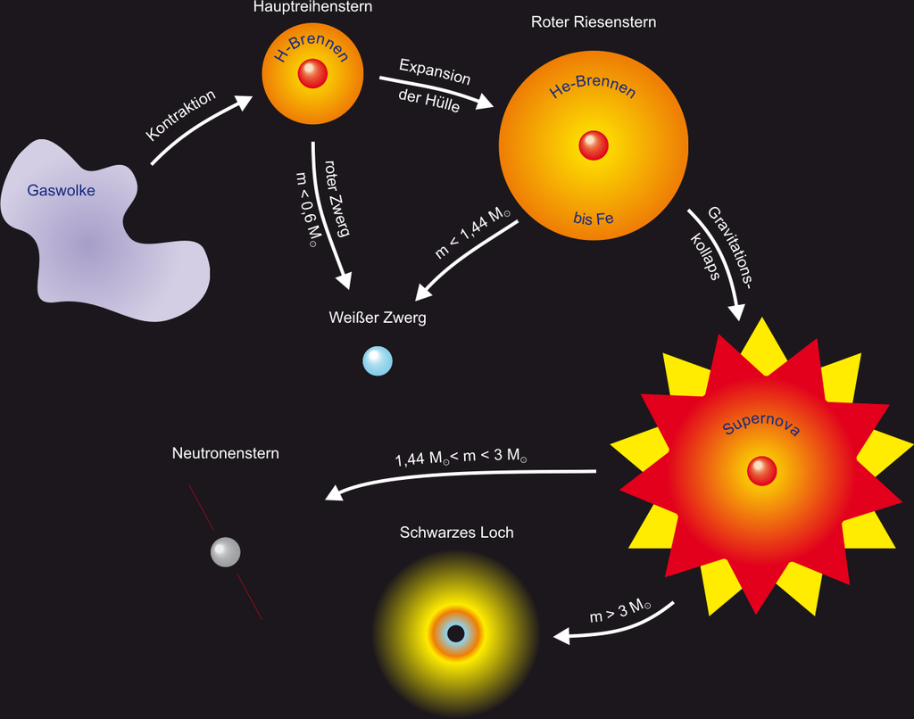
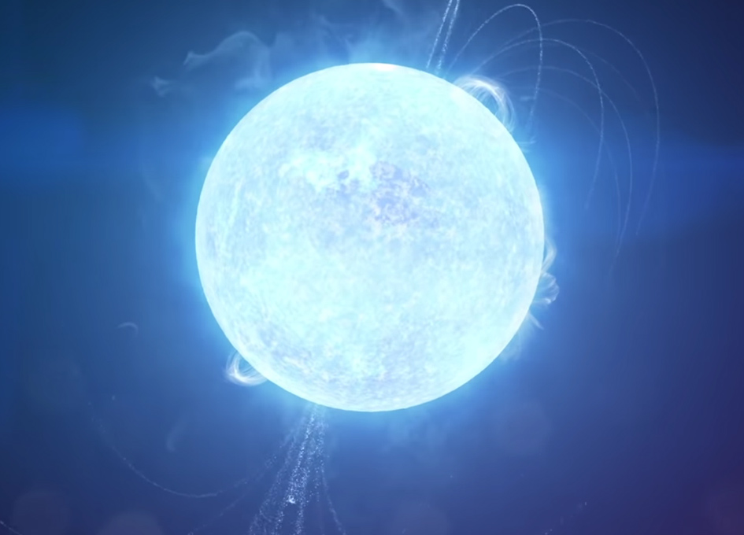

Neutronenstern sind klein und nicht sehr massereich. Sie sind etwa so groß wie eine Stadt und haben eine bis zu zweimal so große Masse wie unsere Sonne. Zudem sind sie sehr dicht, ihre Dichte liegt bei etwa 3,7 bis 5,9 mal 1017. Neutronensterne können auch verschmelzen, wenn dies passiert nennt man das Kilonova. Durch Neutronenstern-Kollision bildeten sie die ersten schweren Elemente. Ein Neutronenstern ist zudem eine Vorstufe vom Schwarzen Loch.
| Ein Neutronenstern ist ein astronomisches Objekt. Wie man schon am Namen hört, besteht ein Neutronenstern wesentlich aus Neutronen. Ein Neutronenstern entsteht, wenn ein massereicher Stern in einer Supernova implodiert. Dieser Stern kann dann zu einem Neutronenstern oder zu einem Schwarzen Loch werden. |

|
| Neutronenstern sind klein und nicht sehr massereich. Sie sind etwa so groß wie eine Stadt und haben eine bis zu zweimal so große Masse wie unsere Sonne. Zudem sind sie sehr dicht, ihre Dichte liegt bei etwa 3,7 bis 5,9 mal 10¹7. |

|